figura 01
Regras de Desconto/Parcelamento 3
Emissão de Boleto para Pagamento 20
Consultando Débitos de Inicial do Foro 33
Gerar CDA (Certidão de Dívida Ativa) 35
Consulta Débitos Prescritos 39
Consulta Pagamentos Efetuados 41
Parcelamento (Entrada em Aberto) 55
Desconto por Regra de Desconto 57
Excessão de Agrupamento de Débito 59
Excessão na Impressão de Carnê 61
Processa Cancelamentos de Débitos 64
Cancela Cancelamento de Débitos 65
MÓDULO ARRECADAÇÃO
O Módulo Arrecadação tem como principal objetivo gerenciar os débitos tributários e não tributários lançados pela Administração Pública Municipal.
Quando é criado um débito no sistema, em algumas rotinas, um histórico automaticamente é criado, assim, essa rotina permite fazer uma alteração dessa informação manualmente.
Descrição dos campos abaixo e modelo de cadastro conforme Figura 01.
Cód. Arrecadação: Campo somente como leitura, não pode ser alterado.
Parcela: Campo somente como leitura, não pode ser alterado.
Histórico de Cálculo: Este campo pode ser alterado pelo sistema, mudando o histórico do débito manualmente.
Usuário: Busca o usuário que lançou o débito no sistema, ao alterar o registro, o sistema grava o usuário da alteração.
Observação: Preencher a observação referente ao débito.
Data Limite: Data limite para a validade do histórico.
figura
01
Nesse menu é feito o cadastramento das regras de desconto no sistema. O sistema só permite fazer parcelamentos ou emitir recibo se possuir uma regra de desconto em vigor, independente de ter direito a desconto ou não.
Descrição dos campos abaixo e modelo de cadastro conforme Figura 02.
ABA Parcelamento
Descrição: Preencher o nome da regra de desconto.
Data de Lançamento: Preencher a data de cadastramento da regra. O sistema preenche automaticamente com a data do dia.
Data Inicial: Preencher a data inicial de validade da regra.
Data Final: Preencher a data final de validade da regra.
Desconto se todas marcadas: Ao selecionar a opção “SIM”, o sistema só permite dar o desconto se todas parcelas do mesmo débito estiverem marcadas no momento da emissão do recibo na Consulta Geral Financeira.
Digitar valor das parcelas: Ao selecionar para o usuário digitar as parcelas, permite colocar valores diferentes para cada parcela no caso de um parcelamento. Dessa forma o sistema faz o ajuste da diferença na última parcela.
Vencimento Padrão: Ao preencher este campo, devemos informar o dia padrão que vencerão as parcelas, com exceção da primeira parcela (entrada). O dia informado nesse parâmetro somente servirá de sugestão para o usuário no momento de parcelar um débito, pois poderá ser alterado no momento do parcelamento.
Dia do Vencimento: Preencher este campo consiste em informar o dia em que será considerado como o limite para que o sistema defina o mês em que será o vencimento da segunda parcela nos casos de parcelamentos, ou seja, na prática é como se esse dia definido fosse o final do mês.
Forma: Permite selecionar 3 formas que podem ser configuradas na regra de parcelamento:
Normal: gera o valor a ser parcelado a partir da soma do valor corrigido + a multa + os juros e subtrai o desconto concedido. Após formar o montante do débito, divide o valor em partes iguais pela quantidade de vezes selecionada no parcelamento.
Juros e multa (última): gera o valor a ser parcelado a partir da soma do valor corrigido separadamente da soma do valor das multas e dos juros, dividindo o valor corrigido em partes iguais conforme o número de parcelas selecionadas no parcelamento menos uma, reservando a última parcela para lançar apenas o montante das multas e juros.
Caso prático de parcelamento em 10x com desconto de 80 % na multa e juros.
|
Valor Corrigido |
900,00 |
|
Valor da Multa |
50,00 |
|
Valor dos Juros |
200,00 |
Nesse caso será dividido o valor corrigido em 9 parcelas e a última parcela ficara com o montante do valor dos juros e multa considerando o desconto.
1ª parcela = 100,00
2ª parcela = 100,00
3ª parcela = 100,00
4ª parcela = 100,00
5ª parcela = 100,00
6ª parcela = 100,00
7ª parcela = 100,00
8ª parcela = 100,00
9ª parcela = 100,00
10ª parcela = 250,00
Loteamento: quando a regra de parcelamento estiver configurada com essa forma, os descontos lançados, só será aplicados quando for efetuado pagamento ou parcelamento de débito de imóveis cujo proprietário for um Loteador.
Aplicação da Regra: O usuário deve selecionar uma regra de aplicação. No caso de escolher a opção “Antes do Lançamento do Débito”, será lançado o desconto no momento da execução do parcelamento do contribuinte. Na regra “Após o Lançamento do Débito”, a regra não dá desconto no ato do parcelamento, mas no ato da emissão do recibo/carnê para o pagamento do débito e também no momento do real pagamento ou baixa do débito.
Documento: Deve ser selecionado o documento que contém o texto do termo de parcelamento da regra do desconto. Se não estiver selecionado nenhum documento, não emite o termo de parcelamento ao parcelar com essa regra.

Figura
02
ABA Tipo de Parcelamento
Nesta aba são lançadas as configurações relativas a forma de pagamento, quantidades de parcelas e percentuais de descontos.
Cada regra para parcelamento pode ter uma ou várias faixas de intervalos de parcelas, ou seja, pode-se fazer uma configuração para forma de pagamento ou parcelamento do débito.
Descrição: Preencher o nome do tipo de parcelamento que será cadastrado.
Data Inicial: Preencher a data inicial da data criação do débito que a regra será aplicada.
Data Final: Preencher a data final da data criação do débito que a regra será aplicada.
Máximo de Parcelas: Preencher o máximo de parcelas que será aplicado a esta regra.
Valor Mínimo: Preencher o valor mínimo de cada parcela.
Data do Valor Mínimo: Preencher a data utilizada para a correção do valor mínimo.
Inflator: Selecionar o inflator utilizado para a correção do valor mínimo.
Desconto Valor Corrigido (%): Preencher o percentual de desconto que será concedido sobre valor corrigido.
Desconto Multa (%): Preencher o percentual de desconto que será concedido sobre valor da multa.
Desconto Juro (%): Preencher o percentual de desconto que será concedido sobre valor dos juros.
Mínimo de Entrada (%): Preencher o percentual mínimo que o contribunte tem que dar de entrada.

Figura
03

figura
03-A
ABA Tipo de Débito
Nessa aba devem ser lançados os tipos de débitos que desejamos conceder os benefícios concedidos pela regra de parcelamento.
Por exemplo, caso desejar conceder o benefício de descontos, tanto para pagamento a vista como parcelado, para os tipos de débito “dívida ativa”, “inicial do foro”, “parcelamento” e “parcelamento do foro , deve mser incluídos os tipos 5, 6, 30 e 34.
Tipo de Débito: Preencher o tipo de débito que se quer conceder desconto. Caso não selecione nenhum tipo o sistema irá considerar todos os tipos de débito.
Vencimento Inicial: Preencher com a data final dos vencimentos a serem considerados para o tipo de débito em questão.
Vencimento Final: Preencher com a data final dos vencimentos a serem considerados para o tipo de débito em questão.

Figura
04
Esse menu é utilizado atualmente para emissão do recibo avulso, para quando alguém precisar emitir uma taxa relativa a uma emissão de certidão débito na CGF, e esse recibo seja emitido automaticamente.
Esta opção funciona quando no parâmetro do Módulo Arrecadação estiver marcado no campo “Recibo da Certidão” como “SIM” e configurado o grupo de taxa no sistema.
Descrição dos campos abaixo e modelo de cadastro conforme Figura 05.

Figura
05
Nesse menu é feito o cadastro dos históricos de cálculo no sistema, sendo que o mesmo é vinculado a um tipo: 1=juro, 2=multa, 3=valor e 4=desconto.
Temos que ter o cuidado de, quando cadastrarmos um histórico e o mesmo será utilizado para geração de débitos e disponibilização para emissão de recibos na CGF, obrigatoriamente temos que cadastrar outro histórico com 100 a mais no código, senão ao emitir o recibo na CGF ocorrerá erro. Um exemplo desses seria, caso cadastrarmos um histórico com código 150=TAXAS DIVERSAS, devemos criar outro com 250=PGTO TAXAS DIVERSAS, justamente porque o sistema considera sempre o histórico + 100 como seu respectivo histórico de pagamento. Normalmente os históricos são definidos na implantação / conversão do sistema.
Descrição dos campos abaixo e modelo de cadastro conforme Figura 06.
Descrição: Preencher o nome do histórico de cálculo.
Tipo de Histórico: Selecionar o tipo de histórico.

Figura
06
Este cadastrado é previamente executado/efetuado na implantação do sistema, e só permite as alterações dos parâmetros do sistema. Este são os grandes grupos de débitos do sistema.
Descrição dos campos abaixo e modelo de cadastro conforme Figura 07.
Permite Importar para Dívida: Permite selecionar se o tipo de débito pode ser importado para a dívida ativa no sistema. Caso não permita, não vão aparecer os débitos na rotina de importação de dívida ativa.
Tipo de Débito é Parcelamento: Permite selecionar se o tipo de débito é parcelamento, significando que o mesmo não poderá ser reparcelado junto com outro código de arrecadação (NUMPRE). Se não for parcelamento, no caso de uma dívida ativa não parcelada ou contribuição de melhoria, assim poderão ser parceladas juntas.
Permite Parcelar: Permite selecionar se este tipo de débito pode ser parcelado no sistema. Esse campo influencia diretamente na habilitação do botão de parcelamento na CGF.

Figura
07
Nesse menu é feito o cadastro dos tipos de débitos no sistema, que controla toda a parte financeira dos débitos e configurações, e de como esse débito vai comportar na CGF.
Descrição dos campos abaixo e modelo de cadastro conforme Figura 08.
Situação do Débito: Selecionar se o débito vai vir marcado ou desmarcado na tela de emissão do relatório do tipo de débito na CGF.
Banco: Preencher o código do banco padrão, pois o sistema grava quando gera um recibo.
Agência: Preencher o código da agência padrão, pois o sistema grava quando gera um recibo.
Emite Recibo: Selecionar se esse tipo de débito emite recibo ou não na CGF.
Agrupa Cód. de Arrecadação: Selecionar se o débito vai aparecer na CGF com o código de arrecadação agrupado ou não.
Agrupa Parcela: Selecionar se o débito vai aparecer na CGF agrupado por parcela ou não.
Taxa Bancária: Preencher o valor da taxa bancária para os casos em que o município cobra essa taxa para cada documento emitido/autenticado no banco. Ao autenticar na tesouraria da prefeitura, o sistema desconsidera esta taxa.
Receita da Taxa Bancaria: Relativo ao campo acima (taxa bancária), sendo que o valor é arrecado nessa receita.
Modelo Carnê: Se estiver preenchido, o sistema utiliza este modelo, senão utiliza o modelo 1 para convênio arrecadação (de 4 vias/parcelas para cada página e para o ficha de compensação (1 parcela por página).
Imprime Valor: Selecionar a opção para emitir os carnês na CGF em quantidade de inflator, senão emite em valor.
Emite Recibo DBPref: Permite emitir recibo no DBPref.
Tipo de Agrupamento: Permite selecionar a opção “Parcial” e “nenhum”. Ao escolher parcial, emite todos os débitos pertencente a aquele mês agrupados no recibo.
Grupo de Débito: Preencher o código do grupo de débito do sistema.
Descrição: Preencher o nome do tipo de débito.
Terc. Dígito Cód. Barras Carnê Única: Preencher o terceiro dígito na montagem da linha digitável do código de barras para o convênio arrecadação. Relativo a emissão de carnês de cota única.
Terc. Dígito Cód. Barras Carnê Normal: Preencher o terceiro dígito na montagem da linha digitável do código de barras para o convênio arrecadação. Relativo a emissão de carnês normais.
Terc. Dígito Cód. Barras Recibo Única: Preencher o terceiro dígito na montagem da linha digitável do código de barras para o convênio arrecadação. Relativo a emissão de recibos de cota única.
Terc. Dígito Cód. Barras Recibo Normal: Preencher o terceiro dígito na montagem da linha digitável do código de barras para o convênio arrecadação. Relativo a emissão de recibos normais.
Mensagem Quota Única (Carnê)
Guia Caixa: Preencher a mensagem que será emitido na guia para o caixa do banco.
Guia Contribuinte: Preencher a mensagem que será emitido na guia para o contribuinte.
Mensagem Parcelas (Carnê)
Guia Caixa: Preencher a mensagem que será emitido na guia para o caixa do banco.
Guia Contribuinte: Preencher a mensagem que será emitido na guia para o caixa do banco.
Mensagem Parcela Vencida (Carnê)
Guia Caixa: Preencher a mensagem que será emitido na guia para o caixa do banco.
Guia Contribuinte: Preencher a mensagem que será emitido na guia para o caixa do banco.
Mensagem Recibo
Mensagem Recibo: Preencher a mensagem que será emitido na guia do recibo.
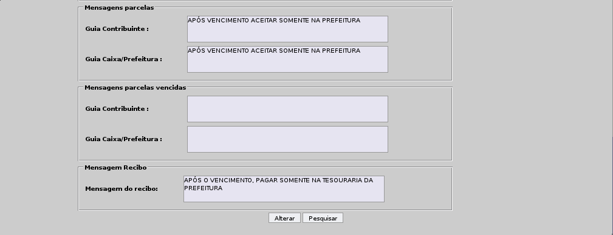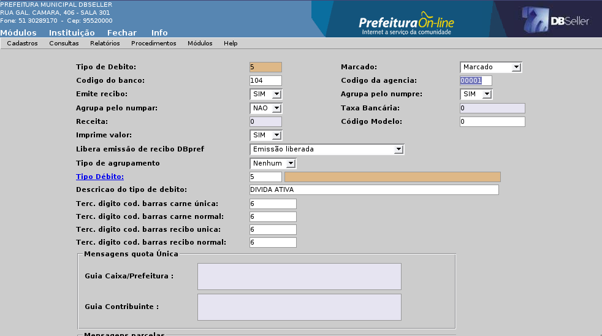
Figura
08
Nesse menu são cadastradas as datas referente aos feriados, sábados e domingos do calendário do exercício corrente, conforme o modelo da Figura 09.

Figura
09
O usuário pode emitir o calendário, clicando no botão [Emite Calendário] para verificar as datas cadastradas para o exercício corrente, conforme a Figura 10 abaixo.
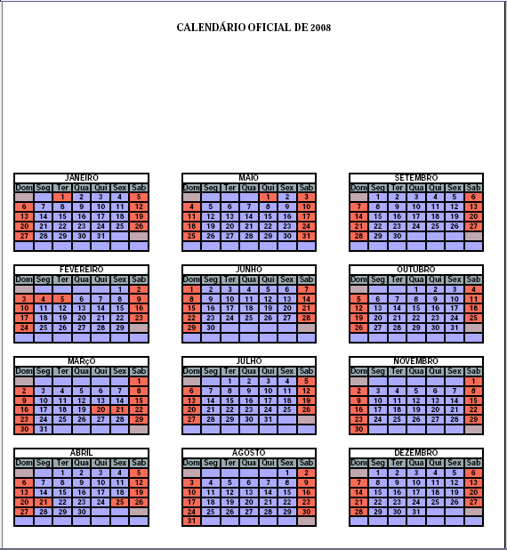
Figura
10
Nesse menu são cadastrados os tipo de Juro/Multa do sistema. Esse cadastro possui as regras de cobrança de juros e multas do sistema.
Descrição dos campos abaixo e modelo de cadastro conforme Figura 11.
Correção
Inflator Correção: Selecionar os inflatores referente ao Tipo de Juro/Multa.
Correção de Vencimento: Permite corrigir para os vencimentos do Juro/Multa.
Juro
Juros por mês (%): Preencher o percentual cobrado por mês de juros de mora no sistema.
Fração Diária: Selecionar se o juro será fracionado por dia ou não.
Considera Sáb/Dom: Selecionar se o juro é cobrado no sábado ou no domingo, quando vencer um débito nestes dias da semana.
Juro Financiamento (%): Preencher com o percentual caso o tipo de juro possua cobrança de juros de financiamento na regra.
Acumulativo: Preencher caso o juro for acumulativo no sistema.
Multa
Mensal Dias: Preencher a quantidade de dias que será cobrado a multa no sistema.
Porcentagem (%): Preencher a porcentagem que será cobrada na quantidade de dias preenchida ao lado.
Fração Multa (%): Preencher a fração da multa, caso o tipo possuir uma multa diária.
Limite (%): Preencher a porcentagem máxima que será cobrada para um tipo de débito.
Desconto
Data: Preencher a data limite que será concedido o desconto no sistema.
Parcela Única (%): Preencher a porcentagem de desconto na parcela única do sistema.
Outras Parcelas (%): Preencher a porcentagem de desconto nas outras parcelas do sistema.
Desconto Integral: Selecionar se o desconto será integral o parcial no sistema.
Após o Vencimento: Selecionar se o desconto será após o vencimento do débito.
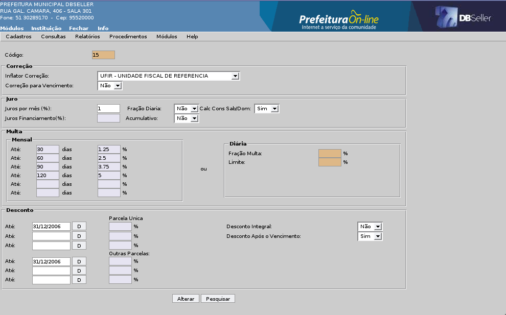
Figura
11
Nesse menu é feito o cadastro das taxas especificas do sistema, que serão utilizados na emissão dos recibos avulsos. Figuras 12 e 12a.
ABA TAXAS
Código das Subreceitas: Gera o código da taxa automaticamente no sistema.
Código da Receita: Preencher com o código da receita referente a taxa no sistema, busca no cadastro da contabilidade.
Descrição: Preencher com o nome da taxa específica no sistema.
Valor Fixo: Preencher o Valor Fixo da taxa.
Valor Variável: Preencher o Valor Variável da taxa.
Quantidade Mínima: Preencher a quantidade mínima a ser cobrada na taxa.
Percentual de Desconto (%): Preencher o percentual de desconto a ser cobrado.
Data de Criação: Busca a data corrente no sistema.
Inflator para correção dos valores: Preencher o código dos inflatores para esta taxa.
Data Validade: Preencher a data de termino desta taxa no sistema.
Tipo para Recibo de Processo: Selecione o tipo de débito que será gravado o valor deste recibo, serão mostrados neste link apenas os tipos de débitos cadastrados no grupo 14 – Recibo de Protocolo.
 Figura
12
Figura
12
Após a inclusão deste registro o sistema direciona para a ABA DEPARTAMENTOS onde pode ser selecionado o departamento no qual será utilizado esta taxa, caso não seja selecionado nenhum departamento esta taxa ficará disponível para todos os departamentos.
 Figura
12a
Figura
12a
Nesse menu são cadastrados os vencimentos para os débitos que o sistema gera. Nesse cadastro é que o usuário informa quais as datas de vencimento de cada tipo de débito calculado.
ABA Vencimentos
Nessa guia são cadastrados os parâmetros dos débitos e bancários.
Descrição dos campos e modelo do cadastro conforme Figura 13.
Código: O campo é gerado automaticamente.
Descrição: Preencher o nome do vencimento. Campo obrigatório.
Banco: Preencher o código do banco ou clicar no link para pesquisar. Quando ocorrer um caso do município desejar utilizar um convênio diferente para um vencimento, ao montar a linha digitável, o sistema busca desse parâmetro a informação do banco, e não dos padrões de carnê e recibo do sistema.
Tipo de Débito: Preencher com o código do tipo de débito ou clicar no link para pesquisar, para vincular o vencimento a um tipo de débito no sistema.
Histórico de Débito: Preencher com o código do histórico de débito ou clicar no link para pesquisar.
Valor Fixado: Quando preenchido este valor será utilizado para o cálculo neste cadastro de vencimento.
Forma de Calculo da Parcela: Permite selecionar a forma para calcular as parcelas no sistema.
Ao selecionar “Não calcula parcelas vencidas”, o sistema busca as datas de vencimento do cadastro, e as parcelas vencidas não são calculadas, jogando o valor para as parcelas que ainda não estão vencidas. e quando todas estiverem vencidas o sistema verifica o próximo campo.(Dias para o Vencimento:)
Ao selecionar “Calcula todas parcelas vencidas”, o sistema calcula com as datas do cadastro de vencimento.
Ao selecionar “Calcula somente as escolhidas”, o sistema calcula de acordo com as parcelas escolhidas na aba datas.
Dias para o Vencimento: Informe 0 (zero) ou a quantidade de dias para o sistema gravar o vencimento contando a partir da data do cálculo.
Quando este campo estiver 0 (zero), o sistema grava o cálculo com a data de vencimento 31/12 do exercício corrente.
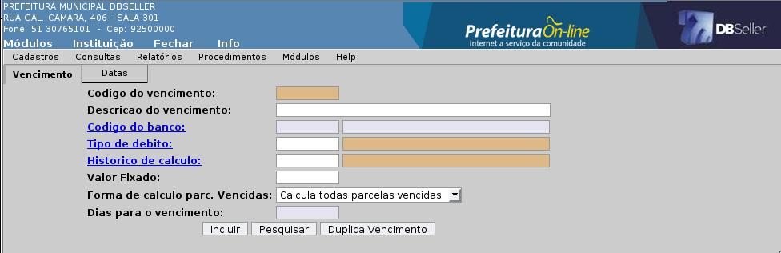Figura 13
ABA Datas
Nessa guia são cadastradas os parâmetros do cálculo e datas de pagamento e vencimentos. Descrição dos campos e modelo do cadastro conforme Figura 14.
Código: O campo é gerado automaticamente.
Parcela: O campo é gerado automaticamente.
Data de Vencimento: Preencher com a data de vencimento para parcela cadastrada. Campo obrigatório.
Descrição: Preencher o nome da parcela cadastrada de acordo com o histórico de cálculo.
Percentual: Preencher o percentual de cálculo para a parcela.
Histórico de Cálculo: Preencher o código do histórico de cálculo ou clicar no link para pesquisar, vinculando para cada parcela que for incluir. Essa informação será utilizada na geração das parcelas no financeiro.

Figura
14
Botões
Incluir: O botão inclui um registro no campo abaixo.
Soma Exercício: Inclui 01(um) ano a mais nos registros já lançados.
Permite alterar os campos permitidos, que não alteram os valores do cálculo.
Permite a exclusão, quando o vencimento não estiver vinculado a nenhum cálculo.
A Consulta Geral Financeira é o menu do Módulo Arrecadação que reúne diversos procedimentos relacionados aos débitos dos contribuintes gerados nas outras rotinas do sistema.
Para um melhor entendimento e facilidade das descrições dos procedimentos, quando for referenciado o termo “Consulta Geral Financeira” será utilizada a abreviatura “CGF”.
Alguns exemplos de procedimentos realizados na CGF são:
consulta dos débitos dos contribuintes, podendo ser acessado pelo CGM (nome), matrícula do imóvel, inscrição do alvará e número do parcelamento;
consultar os pagamentos já efetuados pelo contribuinte;
emissão de boletos para pagamento dos débitos;
parcelamento de débitos;
emissão de certidão de dívida ativa (CDA);
cancelamento de débito;
justificativa de débito;
emissão de certidões (positiva, negativa, regular).
Para acessar a CGF, defina qual a chave de pesquisa que será utilizada:
CGM: informe o número do CGM do contribuinte ou clique no link para pesquisar pelo nome. Dessa forma, se o contribuinte possuir vários imóveis e/ou inscrições de alvará, serão apresentados todos os débitos e pagamentos efetuados relativos a esses imóveis e as inscrições de alvará.
Matrícula: informe o número da matrícula do imóvel que deseja efetuar a consulta ou clique no link para pesquisar pelo nome do proprietário, setor/quadra/lote e logradouro. Dessa forma, serão apresentados os débitos e pagamento específicos dessa matrícula, mesmo que o contribuintes possua outros imóveis.
Inscrição Municipal: informe o número do alvará de localização ou clique no link para pesquisar pelo nome do contribuinte. Dessa forma, serão apresentados os débitos e pagamentos específicos dessa inscrição, mesmo que o CGM desse contribuinte esteja vinculado a outras inscrições e/ou a cadastro de matrículas de imóveis.
Numpre: Cada débito gerado no sistema recebe um código que no DBPortal é conhecido como Numpre ou Código de Arrecadação. Caso desejar efetuar a consulta específica de um determinado débito e tiver em mãos o Numpre, informe esse código no campo. Dessa forma será apresentado na consulta somente esse débito específico, mesmo que esse débito por exemplo seja de uma matrícula e essa matrícula possua outros débitos.
Parcelamento: Caso desejar efetuar uma consulta específica informando o código de uma parcelamento, serão apresentados os débitos e pagamentos relativos às parcelas desse parcelamento.
Notificação: Sempre que é emitida uma notificação de débito para um contribuinte, esse documento recebe uma codificação específica. Caso desejar efetuar a consulta por esse código, serão apresentados todos os débitos que constarem em nome desse contribuinte.
Após definir a forma que deseja efetuar a consulta, informe o código no seu respectivo campo e clique no botão [Pesquisar], conforme figura 15.

figura
15
Na consulta serão apresentados os débitos específicos desse contribuinte. Caso o contribuinte que está sendo consultado não possuir débitos pendentes, será exibida a mensagem “Sem Débitos a Pagar”.
No exemplo demonstrado na figura 16, está sendo efetuada a consulta de débitos de uma matrícula de imóvel.


 figura
16
figura
16
quadro 1: nesses campos serão apresentadas as notificações que foram emitidas para essa matrícula.
quadro 2: nesse quadro são exibidas as informações cadastrais do proprietário desse imóvel ou de seu possuidor (promitente). Para visualizar o cadastro completo, clique no link CGM.
quadro 3: nesse quadro é mostrado o código da matrícula que está sendo consultada. Para visualizar seus dados cadastrais, clique no link Matrícula.
quadro 4: nesse quadro são apresentados os tipos de débitos que essa matrícula possui em aberto. Para visualizar os débitos clique sobre o link do débito desejado.
quadro 5: nesse quadro são apresentadas as movimentações dessa matrícula, como por exemplo: pagamentos, cancelamentos de débitos, débitos prescritos, parcelamentos anulados, situação fiscal, além de informações de outras matrículas ou inscrições de alvará vinculadas ao CGM do contribuinte em questão. Também é disponibilizado a emissão de certidões de débito dos tipos: negativa, positiva ou regular.
A situação relativa a certidão apresentada no quadro 5, será automaticamente definida pelo sistema mediante a averiguação da situação dos débitos do contribuinte:
negativa: sempre que o sistema não identificar nenhum débito cujo prazo para pagamento já tenha expirado (vencido);
positiva: sempre que o sistema identificar que existe algum débito cujo prazo de vencimento já tenha expirado.
regular: essa situação é apresentada quando o sistema identificar que existe um parcelamento, porém não existe nenhuma parcela vencida.
Em relação a situação da certidão, existe uma exceção relativa ao tipo de débito ISSQN Variável. Dependendo do parâmetro “libera variável” descrito no procedimento Parâmetros.
Configurações do parâmetro: se estiver configurado como “SIM” e o usuário estiver consultando um contribuinte que possui ISSQN Variável com parcela já vencida, porém com o valor zerado, o sistema considera que esse contribuinte está com a situação negativa (se possuir somente esse débito). Se o ISSQN Variável estiver com a parcela vencida, porém com valor do imposto preenchido, o sistema considera esse contribuinte com a situação positiva. Se estiver configurado como “NÃO”, independente do valor do imposto estar preenchido com valor ou não, se a parcela já estiver vencida, o sistema considera esse contribuinte com a situação positiva.
Para emitir o boleto para pagamento, clique no link do tipo de débito, desejado conforme quadro 4 da figura 16 e será apresentada a tela conforme figura 17.


 figura
17
figura
17
MI: clique nesse campo para visualizar mais informações relativas ao débito conforme figura 18.
N: nesse campo é indicado se esse débito já foi inserido em alguma notificação para o contribuinte.
Numpre: esse campo corresponde ao código do débito no sistema.
P: Corresponde ao número da parcela que está sendo apresentada. Normalmente os débitos são apresentado inicialmente com todas as parcelas agrupadas, nesse caso o número da parcela é 0 (zero), e somente quando clicar no link “AP”, descrito no item 9, é que serão apresentados os números correspondente a cada parcela.
T: corresponde ao total de parcelas desse débito.
Dt. Oper: Corresponde a data de operação do débito, ou seja, a data que foi constituído/criado.
Dt. Venc: Corresponde a data de vencimento da parcela. Quando as parcelas são apresentadas de forma agrupada, é mostrada a data de vencimento da menor parcela em aberto desse débito.
Histórico: Corresponde ao histórico de cálculo da parcela e da mesma forma do item anterior, quando as parcelas são apresentadas de forma agrupada, é mostrado o histórico da menor parcela em aberto do débito.
Rec: Ao clicar no link “AP” dessa coluna, as parcelas serão desagrupadas, mostrando os valores e vencimentos individualmente por parcela. Após clicar no “AP” o link passará a ser “DE” e clicando sobre o mesmo, a parcela será desmembrada em receitas, mostrando assim o código de cada receita do débito que compõe a parcela com seus respectivos valores conforme figura 19.
Receita: Nesse campo é apresentada a descrição da receita do débito.
Val: Nesse campo é apresentado o valor histórico do débito.
Val. Cor: Nesse campo é apresentado o valor atualizado do débito até a data atual.
Jur: Nesse campo é apresentado o valor do juro de mora e de parcelamento/financiamento incidente sobre as parcelas vencidas e calculado até a data atual.
Multa: Nesse campo é apresentado o valor da multa de mora incidente sobre as parcelas vencidas.
Desconto: Nesse campo é apresentado o valor correspondente ao desconto concedido para esse débito.
Tot: Nesse campo é apresentado o valor total da parcela a ser pago que é a soma do valor corrigido + juros + multa - desconto.
M: Esse campo está reservado para selecionar os registros que deseja efetuar algum procedimento. Caso as parcelas estejam desmembradas, clicando no “M”, serão selecionadas todas as parcelas e clicando no “D”, todas as parcelas serão desmarcadas.
As colunas apresentadas podem variar de acordo com o tipo de débito que está sendo consultado, por exemplo, se o tipo for “dívida ativa”, será apresentado também o código do registro e exercício da dívida.

figura
18
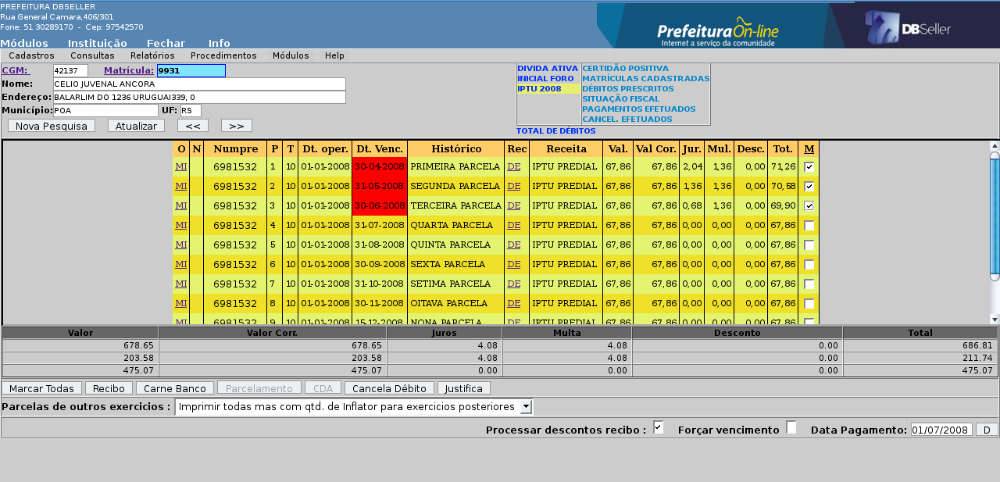
figura
19
Para emitir o boleto de pagamento, selecione os registros desejados e clique no botão [Recibo]. Dessa forma será gerado apenas um boleto agrupando com todas as parcelas selecionadas, conforme demonstrado na figura 20. Se for optado por emissão de carnê, será gerado um boleto para cada uma das parcelas selecionadas conforme demonstrado na figura 21.

figura
20 – recibo
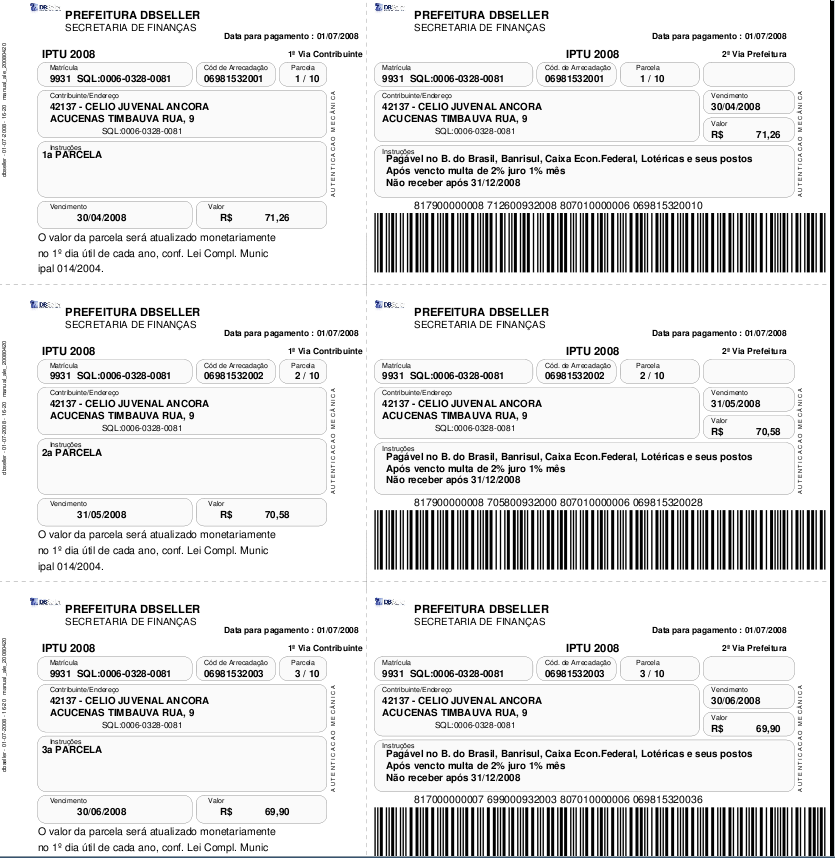
figura
21 – carnê
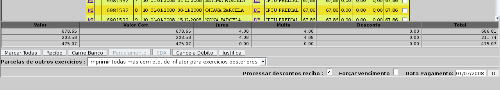
 figura
22
figura
22
Na tabela assinalada na figura 22, os valores listados na primeira linha correspondem a soma do valor de todos os débitos que estão dentro do tipo de débito que está sendo consultado.
Os valores apresentados na segunda linha correspondem a soma do valor das parcelas que estão marcadas/selecionados.
Os valores apresentados na terceira linha correspondem a soma do valor dos débitos que não foram selecionados.
Para emitir um recibo para uma data futura, altere a data no campo [Data Pagamento], indicado na figura 22, e clique novamente no tipo de débito desejado. Dessa forma todos os valores serão recalculados, considerando a nova data.
Se o campo “Processar desconto recibo” estiver selecionado, o sistema irá considerar o desconto configurado na regra de parcelamento para pagamento a vista para esse tipo de débito. Caso contrário, o recibo será emitido sem nenhum desconto.
Sempre que é emitido recibo de um débito cuja data de vencimento ainda não está expirada, a data de vencimento do recibo será a data de vencimento do débito. Caso a data de vencimento do débito já tenha expirado, o recibo será emitido com a data do dia ou com a data definida no campo “Data Pagamento”. Para os casos em que na configuração do tipo de juro e multa que está vinculada a receita (normalmente em parcelamentos), está configurado para cobrar juro de financiamento e o contribuinte deseja efetuar a antecipação do pagamento de uma parcela, e quer um recibo para efetuar esse pagamento, deve ser selecionado esse campo, e dessa forma será emitido um recibo da parcela com vencimento futura com o juro de financiamento calculado até a data que está sendo emitido o recibo.
Nessa opção é possível escolher a forma de tratamento que dever ser dado quando for selecionado para emitir carnê de parcelas que vencem em exercícios futuros:
Imprimir todas mas com qtd de inflator para exercícios posteriores: nessa opção, as parcelas com vencimento em exercícios futuros que foram selecionadas para emitir carnê, serão impressas, porem o valor do débito será convertido em quantidade de inflator e essa quantidade é que será impressa no campo contendo na frente o inflator, utilizado para corrigir a receita.
Não imprimir parcelas de exercícios posteriores: nessa opção, mesmo que sejam selecionadas parcelas com vencimento em exercícios posteriores, ao emitir o carnê, essa parcelas não serão impressas.
Quando acessamos a CGF, seja por CGM, Matrícula ou Inscrição, temos a informação, por um link, de que tipo de Certidão poderá ser emitida. Este tipo pode ser: Certidão Negativa, Certidão Positiva ou Certidão Regular dependendo da situação financeira da origem acessada. Quando temos um débito já vencido a Certidão será Positiva, para que a Certidão seja Negativa o débito que está lançado nesta origem não pode estar vencido e não pode ser do tipo parcelamento, pois se for parcelamento a Certidão será sempre Positiva ou Regular.
Para considerar a situação do débito para a Certidão o sistema leva em conta neste módulo a rotina Procedimentos > Parâmetros campo Libera Variável, quando este campo estiver marcado SIM não serão considerados os débitos de ISSQN Variável sem movimento/lançamento para a Certidão. O sistema verifica também o Calendário do Sistema onde temos os registros de sábados, domingos e feriados. Podendo assim ser emitido uma Certidão Negativa para um débito já vencido, desde que este vencimento seja em um fim de semana ou feriado e a emissão no próximo dia útil.
Abaixo relaciono alguns modelos de Certidão, este texto é configurado na seguinte rotina Configuração > Procedimentos > Manutenção de Documentos / Parágrafos a numeração da Certidão é configurada na rotina Procedimentos > Parâmetros campo Tipo de Codificação podendo optar por numerar utilizando Sequencial Geral, Código do Processo e Exercício, Sequencial por Tipo de Certidão ou Não Codifica.

O
modelo acima é Certidão Negativa de
Débitos por CGM
e está sendo utilizado a opção Não
Codifica.

O
modelo acima é Certidão Negativa de
Débitos por Matrícula
e está sendo utilizado a opção Sequencial
Geral

O
modelo acima é Certidão Positiva de
Débitos por CGM
e está sendo utilizado a opção Sequencial
por Tipo de Certidão.

O
modelo acima é Certidão Positiva de
Débitos por Matrícula
e está sendo utilizado a opção Sequencial
Geral.

O
modelo acima é Certidão Negativa de
Débitos por Inscrição
e está sendo utilizado a opção Código
do Processo e Exercício.
Para parcelar um débito, clique no tipo de débito desejado, selecione os registros que deseja parcelar e clique no botão [Parcelamento], conforme indicado na figura 23.
Será apresentada uma nova tela conforme a figura 24, onde deve ser selecionada a regra de parcelamento, a quantidade de parcelas e as datas de vencimentos.

 figura
23
figura
23
Selecionando a regra de parcelamento:
Nesse campo deve ser selecionada uma regra que será utilizada para parcelar os débitos selecionados anteriormente. A tabela com as opções de parcelas será montada a partir da quantidade máxima de parcelas, definida nas regras de parcelamento.
Quantidade de parcelas:
Na tabela com as opções do número de parcelas disponíveis, marque a opção desejada.
Responsável pelo parcelamento:
Selecione o contribuinte responsável pelo parcelamento que está sendo efetuado. O sistema busca automaticamente o próprio nome do contribuinte, porém quando seu cadastro do CGM está desatualizado, deverá ser clicado no link para pesquisar pelo nome.
Parcelas:
Esse campo será preenchido automaticamente com a quantidade de parcelas selecionada na tabela menos a parcela de entrada.
Ex.: caso tenha sido selecionado no quadro a opção de 10x, esse campo será preenchido com 9 parcelas. Isso corresponde a uma entrada mais 9 parcelas.
Entrada:
Esse campo corresponde ao valor da parcela de entrada e será definido de acordo com o que estiver selecionado no campo tipo de arredondamento.
Primeiro Vencimento:
Informe nesse campo a data de vencimento da entrada do parcelamento.
Segundo Vencimento:
Informe nesse campo a data de vencimento da segunda parcela.
Dia dos Próximos Vencimentos:
Informe nesse campo o dia do vencimento da terceira parcela e diante.
Ex.:
|
dia das próximas parcelas |
15 |
|
entrada |
10/01/2008 |
|
segunda parcela |
10/02/2008 |
|
terceira parcela |
15/03/2008 |
|
quarta parcela |
15/04/2008 |
Tipo de arredondamento:
Nessa opção é possível definir a forma que deseja gerar o valor da entrada.
próximo inteiro: divide o valor do débito pelo número de parcelas selecionado e arredonda o valor da entrada para o próximo valor inteiro, ajustando o valor das demais parcelas. Ex.: 102,00, 103,00, 104,00.
próximo decimal: arredonda o valor da entrada para o próximo valor decimal imediatamente superior e ajusta o valor das demais parcelas. Ex.: 110,00, 130,00, 140,00.
não arredonda: nessa opção o valor da entrada será o produto da divisão do valor do débito pela quantidade de parcelas definida, considerando as casas decimais. Ex.: 102,45, 103,81, 104,96.
Valor de cada parcela:
Nesse campo será apresentado o valor das parcelas compreendidas entre a segunda e a penúltima.
Valor da última parcela:
Nesse campo será apresentado o valor da última parcela, que em muitos casos pode apresentar diferença em relação ao valor das outra parcelas, em função do arredondamento das casas decimais.

figura
24
Caso desejar parcelar juntamente débitos que estão dentro de dois ou mais tipos de débitos diferentes, acesse os débitos de um tipo, selecione os registros desejados e clique no botão [parcelamento]. Não escolha nenhuma regra de parcelamento nem opção de parcelas. Clique no outro tipo de débito desejado e selecione os registros que também deseja parcelar e clique no botão [parcelamento] novamente. Dessa forma os valores de todos os débitos selecionados em todos os tipos serão acumulados, permitindo assim efetuar um único parcelamento.
Atenção: Somente é permitido efetuar parcelamento de débitos que estão ligados a grupos de débitos cujo campo “Permite Parcelar” está configurado como “SIM”.
Somente será permitido unificar em um único parcelamento os tipos de débito: dívida ativa, parcelamento e dívida de contribuição de melhorias.
Após clicar no botão [Parcelar], será apresentada uma tela com o número do termo de parcelamento gerado, conforme figura 25. Clique no botão [OK] para realizar a impressão do termo de parcelamento, conforme modelo da figura 26.
Após parcelado o débito passará para para o tipo de débito:
|
ORIGEM |
DESTINO |
|
Dívida Ativa |
Parcelamento de Dívida |
|
Dívida Ativa Melhorias |
Parcelamento de Dívida |
|
Inicial do Foro |
Parcelamento do Foro |
|
Diversos |
Parcelamento de Diversos |
|
Contribuição de melhorias |
Parcelamento de Melhorias |

figura
25

figura
26
Abaixo, na figura 27, a demonstração da mudança do tipo de débito “dívida ativa” para “parcelamento de dívida”, após efetuado o parcelamento.
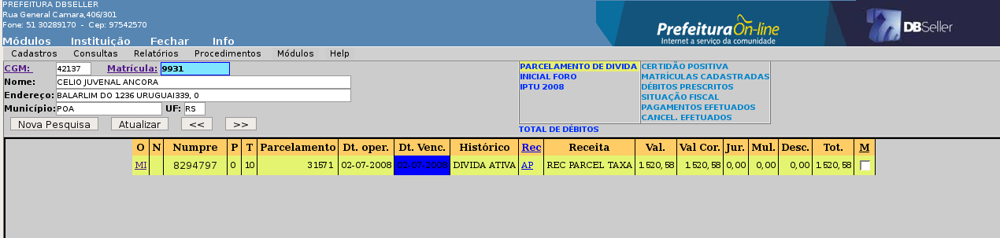
figura
27
Caso desejar imprimir novamente o termo de parcelamento, clique no link “MI” e será apresentada uma tela conforme figura 28. Basta clicar no botão [Visualizar Termo]. Nessa tela também estão disponíveis diversas informações a sobre o parcelamento.
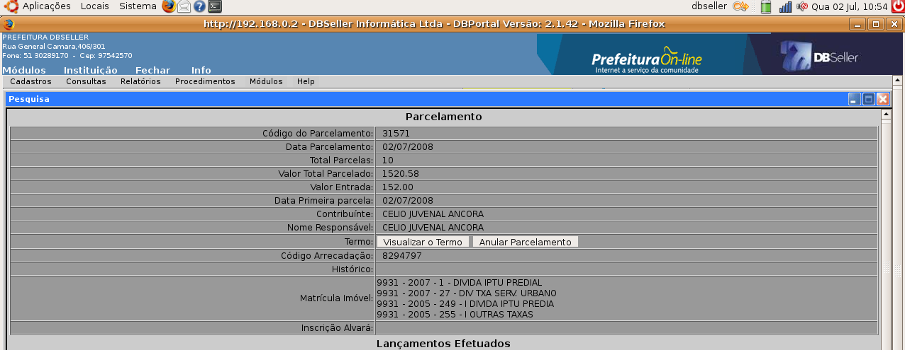
figura
28.
Um parcelamento pode ser anulado, para isso basta clicar no link “MI” do registro do parcelamento, onde será apresentada a tela conforme figura 28. Clique no botão [Anular Parcelamento] e será apresentada uma nova tela onde devem ser lançadas algumas informações a respeito da anulação.
Motivo:
Nesse campo, digite alguma observação que deseja fazer a respeito da anulação.
Código do Processo:
Informe o número do processo de protocolo que deu origem a essa anulação ou clique no link para pesquisar pelo nome do requerente. Essa informação não é obrigatória.
Após lançar as informações descritas acima, clique no botão [Anular Parcelamento].
Quando é efetuada a anulação de um parcelamento, os débitos que faziam parte da sua composição, ou seja, a origem do parcelamento, voltam para a situação original, deduzidos dos valores das parcelas pagas.
Ex.: Se foi efetuado parcelamento de dívidas dos anos de 2002,2003,2004, quando parcelados eles passam a ser uma única composição de débito dividido em parcelas. Após anular esse parcelamento, os débitos voltam a ser novamente do tipo “Dívida Ativa”, separados por ano, como originalmente antes do parcelamento.
No caso dos contribuintes que possuem parcelamento anulado, é habilitado um link para consulta, conforme demonstrado na figura 29. Clique nesse link e será apresentada outra tela com os parcelamentos anulados desse contribuinte, conforme figura 30. Para visualizar os detalhes de um parcelamento, clique no link “MI” da coluna “Detalhes” e abrirá o parcelamento anulado. Navegue pelas informações, clicando em cada link e visualizará os dados conforme figura 31.

figura
29

figura
30

figura
31
Os débitos que estão agrupados dentro desse tipo de débito são as dívidas que estão em cobrança judicial, e sua consulta é um pouco diferente dos demais tipos de débitos.
Após clicar no link do tipo de débito em questão, será apresentada a tela conforme demonstrado na figura 32.

figura
32
Nessa tela podem ser realizadas as mesmas operações dos demais tipos de débitos: emissão de recibo e parcelamento por exemplo. Para isso, marque a inicial desejada e proceda com a operação.
O número da inicial corresponde ao código recebido quando o Setor Jurídico gerar a “Petição Inicial” no Módulo Jurídico.
Para visualizar as Certidões de Dívida Ativa (CDAs), que compõe a inicial, clique no link “MI”.
Na tela demonstrada na figura 33, pode ser visualizada a composição da inicial que está sendo consultada, ou seja, quais são as CDAs dessa inicial.
Ao clicar no link “MI” de uma CDA, será apresentada uma nova tela com o detalhamento dos débitos conforme figura 34.

figura
33

figura
34
A Certidão de Dívida Ativa (CDA), é o documento obrigatório para a Fazenda Pública ingressar com uma Ação Fiscal contra um contribuinte. Para gerar uma CDA, o débito precisa obrigatoriamente estar inscrito em dívida ativa, porém há a possibilidade também de gerar CDA para uma dívida parcelada, que no sistema chamamos de “Certidão de Parcelamento”.
Para gerar uma CDA, clique no link do tipo de débito “Dívida Ativa” ou “Parcelamento de Dívida”. Após marque os registros que deseja inserir na CDA e clique no botão [CDA], conforme demonstrado na figura 35.

 figura
35
figura
35
Sempre que for gerada uma CDA os débitos serão trocados de tipo:
|
ORIGEM |
DESTINO |
|
Dívida Ativa |
Certidão do Foro |
|
Parcelamento de Dívida |
Certidão do Foro |
Após gerar a CDA, será apresentada a tela informando o número da certidão. Para imprimir o documento, clique no botão [OK]. Modelo de uma CDA apresentado na figura 36.

figura
36
Nessa opção é possível emitir um extrato com os débitos da consulta que está sendo efetuada. Para isso clique no link conforme indicado na figura 37.

figura
37
Na próxima tela, será apresentado um resumo dos valores devidos agrupados por tipo de débito, conforme demonstrado na figura 38.
A configuração de marcação automática do tipo de débito é efetuada no cadastro do tipo de débito, ou seja, lá no cadastro é que podemos definir se o tipo de débito virá marcado ou não ao acessar essa opção. Caso não queira que algum tipo de débito seja inserido no relatório, desmarque o tipo.

figura
38
Por Receita:
Se for clicado nesse botão, os débitos serão apresentados nessa tela serão agrupados por receita dentro de cada tipo de débito, conforme demonstrado na figura 39 e o botão assume a descrição “Por Tipo”, que serve para agrupar os dados por tipo novamente.
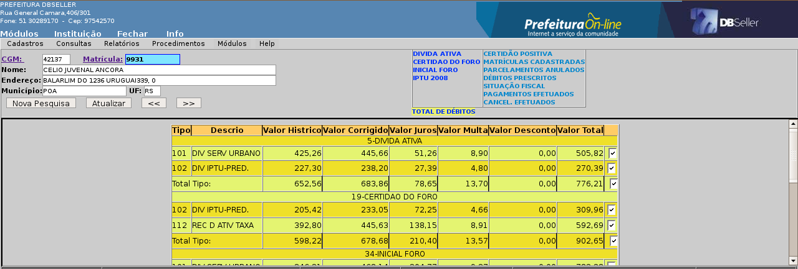
figura
39
Relatório Sintético:
Nessa opção é gerado um relatório com o resumo dos valores, ou seja, será impresso um resumo conforme é apresentado na tela 40.

figura
40 – modelo sintético
Relatório Analítico:
Nessa opção é gerado um relatório com o detalhamento dos débitos que estão dentro de cada tipo de débito, conforme demonstrado na figura 41.

figura
41 – modelo analítico
Período:
Além do filtro por tipo de débito, pode ser gerado o relatório considerando a data de operação dos débitos. Caso queira considerar no relatório apenas débitos cuja data de operação esteja entre uma determinada data de operação, informe o intervalo nesse campo.
Exercício:
Além do filtro por tipo de débito, pode ser gerado o relatório considerando também o exercício dos débitos. Caso queira considerar no relatório apenas débitos de determinados exercícios, informe o intervalo nesse campo.
Para consultar os débitos prescritos do contribuinte, clique no link conforme indicado na figura 42.

figura
42
Na tela seguinte, serão apresentados todos os registros prescritos desse contribuinte, conforme a figura 43. Para visualizar a data da prescrição e o usuário que efetuou o lançamento, posicione o ponteiro do mouse sobre o numpre de cada registro. Para gerar relatório com essas informações, clique no botão [Imprimir].
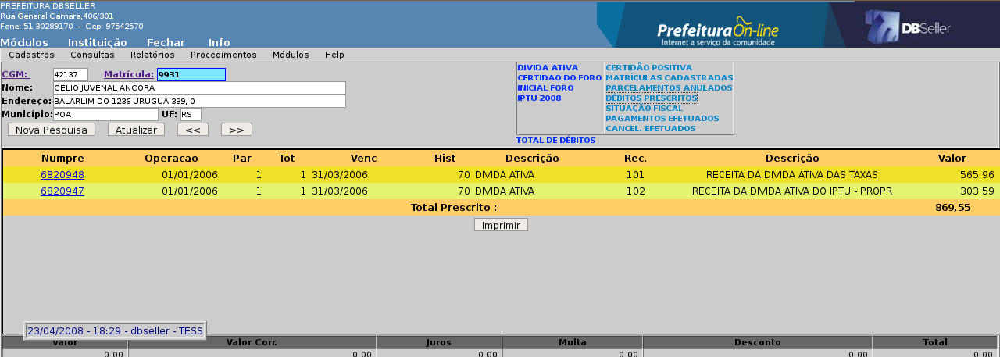
 figura
43
figura
43
Esse link possibilita efetuar uma consulta sobre algum procedimento do Módulo Fiscal que tenha sido gerado para o contribuinte que está sendo consultado, ou seja, Notificação Fiscal, Auto de Infração, Vistoria e Levantamento Fiscal, conforme figura 44.
Esse link estará sempre disponível, independente do contribuinte ter ou não um procedimento fiscal lançado para ele.
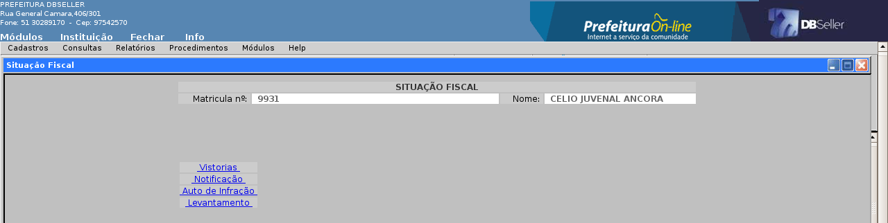
figura
44
Para verificar os pagamentos efetuados do contribuinte que está sendo consultado, clique no link conforme indicado na figura 45. Na tela seguinte, conforme figura 46, são disponibilizadas as opções de filtro:
período (data inicial e data final): correspondente a data que foi efetuado o pagamento pelo contribuinte. Informe o intervalo desejado.
receita: informe o código da receita e serão apresentados os pagamentos efetuados apenas nessa receita.
conta: informe o número da conta contábil que está vinculado o terminal de caixa não qual foi efetuado o pagamento ou o banco onde foi efetuado o pagamento.
Caso desejar visualizar todos os pagamentos do contribuinte, deixe todos esses campos em branco e clique no botão [Procurar]. Será apresentada a tela com os valores pagos conforme figura 47. Se desejar imprimir essa consulta, clique no botão [Imprimir], que está localizado no final da tela.

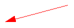figura
45

figura
46
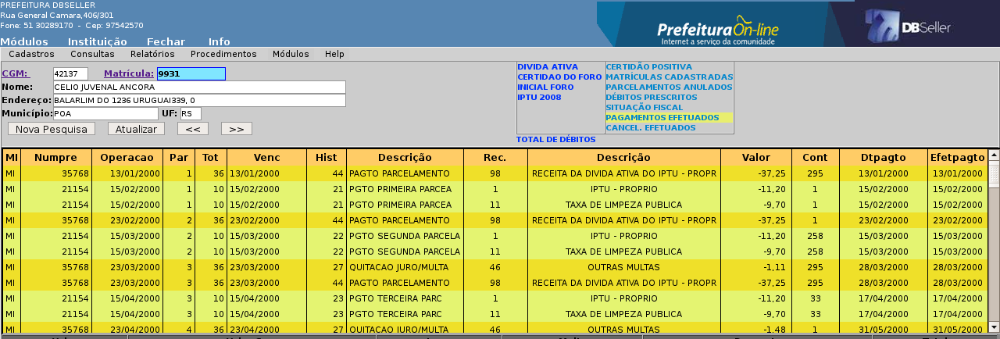
figura
47
Para verificar os débitos desse contribuinte que foram cancelados, clique no link conforme indicado na figura 49. Na tela seguinte, conforme figura 50, são disponibilizadas as opções de filtro:
período (data inicial e data final): correspondente a data que foi efetuado o cancelamento do débito. Informe o intervalo desejado.
receita: informe o código da receita e serão apresentados os cancelamentos efetuados apenas nessa receita.
Caso desejar visualizar todos os cancelamentos do contribuinte, deixe todos esses campos em branco e clique no botão [Procurar]. Em seguida será apresentada a tela com os valores pagos conforme figura 51. Para visualizar a data, o usuário e o motivo do cancelamento, posicione o ponteiro do mouse sobre o numpre de cada registro. Se desejar imprimir essa consulta, clique no botão [Imprimir] no final da tela.

 figura
49
figura
49

figura
50

figura
51
Para efetuar o cancelamento de um ou mais débitos de um contribuinte, clique no tipo de débito desejado, selecione os registros que deseja cancelar e clique no botão [Cancela Débito], conforme demonstrado na figura 52.
Na próxima tela, preencha as informações relativas ao cancelamento que está sendo efetuado, conforme figura 53.
Processo:
Informe o número do processo que originou o cancelamento do débito que está sendo efetuado ou clique no link para pesquisar pelo nome do requerente. Essa informação é opcional.
Tipo de cancelamento:
Selecione Normal ou Renuncia, quando selecionado Renuncia será mostrado mais um campo;
Característica Peculiar:
Este cadastro é proveniente da contabilidade, basta clicar no link e será mostrado a relação de itens disponibilizados pela Contabilidade da Instituição, é de acordo com a característica selecionada que este débito cancelado será registrado na contabilidade.
Descrição resumida do cancelamento:
Nesse campo, informe a descrição resumida do grupo de cancelamento de débito que está sendo criado, pois outros cancelamentos podem ser vinculados a esse mesmo grupo e no momento de processar o cancelamento, conforme descrito no procedimento “Processa Cancelamento”.
Observações:
Nesse campo pode ser digitado texto com explicação do motivo do cancelamento que está sendo lançado.
Após lançar as informações descritas anteriormente, clique no botão [Confirmar].
O débito só será efetivamente cancelado, após executar o procedimento “Processa Cancelamento”. Enquanto isso, o débito continuará aparecendo e disponível na CGF.
Na figura 53, está sendo demonstrada a tela do lançamento de um cancelamento. Já na figura 54, está sendo demonstrada a tela quando se está lançando um débito para cancelamento onde já existe um grupo que ainda não foi processado. Dessa forma, esse novo lançamento pode ser vinculado a esse grupo já existente, e no momento de processar os dois lançamentos, serão processados de uma única vez.

 figura
52
figura
52

figura
53
 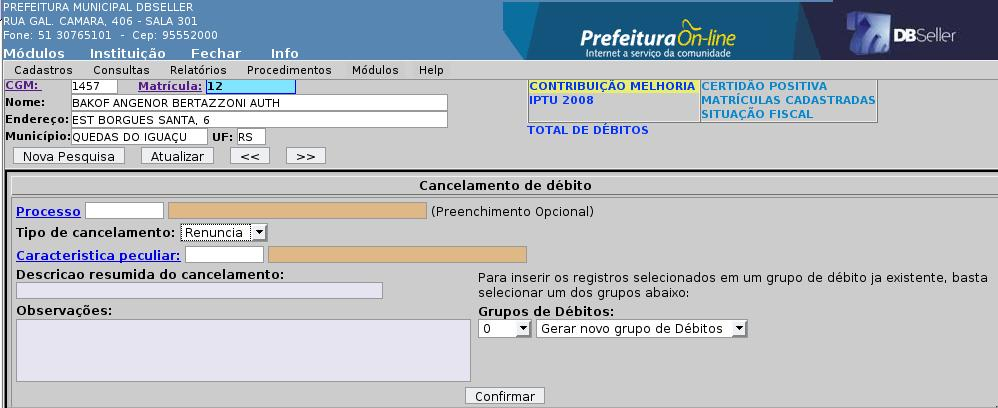
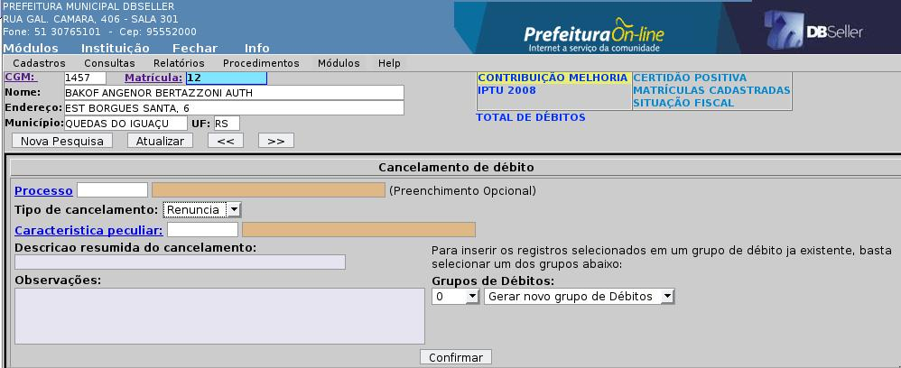
figura
54
Esse procedimento deve ser utilizado quando um contribuinte efetuar o pagamento na rede bancária de um débito que está sendo motivo de impedimento para gerar uma certidão negativa, e o contribuinte procurar a prefeitura, comprovar o pagamento e requerer essa certidão.
Como a rede bancária pode levar vários dias úteis, e isso depende do convênio firmado entre a prefeitura e o banco (normalmente são 2 dias úteis) para enviar as informações de pagamento para a prefeitura, não seria possível emitir a certidão negativa no mesmo dia por exemplo.
Para justificar os débitos de um contribuinte, selecione o débito desejado e clique no botão [Justifica], conforme indicado na figura 55.
Na próxima tela, preencha as informações relativas a justificativa que está sendo lançada, conforme figura 56.
Observações:
Nesse campo digite um texto com o motivo pelo qual está sendo justificado esse débito.
Dias:
Informe nesse campo o número de dias que deseja manter esse débito justificado. A situação do contribuinte ficará como negativa em relação ao débito justificado pelo número de dias informados nesse campo, contando a partir da data do lançamento. Se nesse prazo o débito não for baixado através da rotina da baixa de banco, a situação do contribuinte voltará a ficar positiva em relação aos débitos.
Após lançar as informações descritas nos campos anteriores, clique no botão [Confirmar].
Nesse momento, a situação do contribuinte passará a ser negativa ou regular, desde que o débito justificado seja o único motivo pelo qual a situação do contribuinte estava positivo.

 figura
55
figura
55

figura
56
Esse relatório emite os dados cadastrais do cadastro de tipo de juro/multa, permitindo gerar o relatório em ordem: alfabética e numérica), conforme a Figura 57 abaixo.

Figura
57
A Figura 58 mostra um modelo do relatório cadastral de tipo de juro/multa.

Figura
58
Esse relatório emite os dados cadastrais do cadastro do tipo de débito, permitindo gerar o relatório em ordem: alfabética e numérica), conforme a Figura 59 abaixo.

Figura
59
Na Figura 60 mostra um modelo do relatório cadastral de tipo de débito.

Figura
60
Esse relatório emite os dados cadastrais do cadastro do histórico de débito, permitindo gerar o relatório em ordem: alfabética e numérica), conforme a Figura 61 abaixo.

Figura
61
Na Figura 62 mostra um modelo do relatório cadastral de histórico de débito.

Figura
62
Esse relatório emite os dados do calendário do exercício selecionado no filtro do relatório, conforme a Figura 63 abaixo. O menu Cadastro > Calendário possui o modelo do calendário emitido.
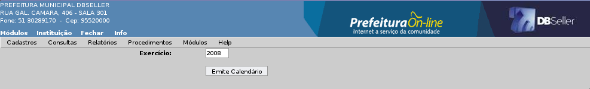
Figura
63
Esse relatório emite os dados cadastrais da taxa específica, permitindo gerar o relatório nas opções de ordem: todos, com e sem data). Modelo conforme a Figura 64 abaixo.

Figura
64
A Figura 65 mostra um modelo do relatório cadastral da taxa específica.

Figura
65
Nesse relatório é emitido uma lista de contribuintes com os valores por tipo de débito, podendo repetir o contribuinte quantas vezes os tipos de débito escolhido no filtro do relatório. Este relatório utiliza a tabela débito do sistema. O campo data do cálculo é a última data da tabela débito no sistema. Modelo do formulário de emissão do relatório conforme a Figura 66 abaixo.
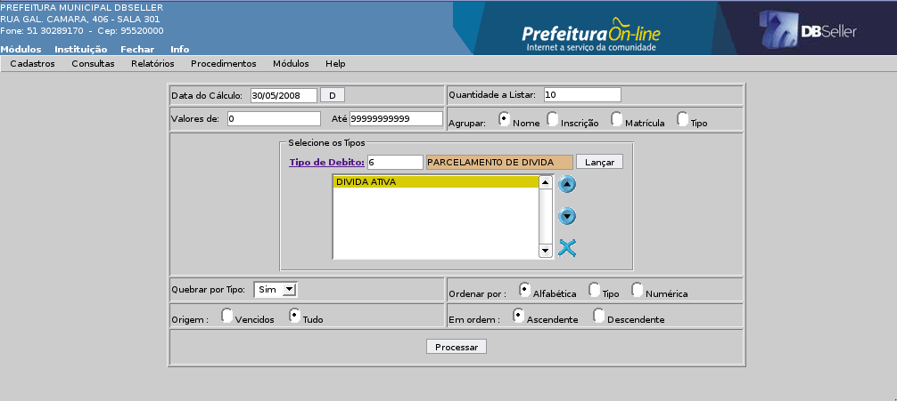
Figura
66
A Figura 67 mostra um modelo do relatório de tipo de débito por contribuinte.

Figura
67
São exibidas nesse relatório as taxas específicas do sistema com seus valores calculados e a quantidade de vezes que foram utilizadas em um determinado período.
Descrição dos campos e modelo do cadastro conforme Figura 68.
Taxa Específica: Preencher com a taxa que se quer emitir ou deixar em branco para emitir todas.
Data: Preencher com a data inicial e final do período que se quer emitir.
Agrupar: Permite agrupar por taxa específica.
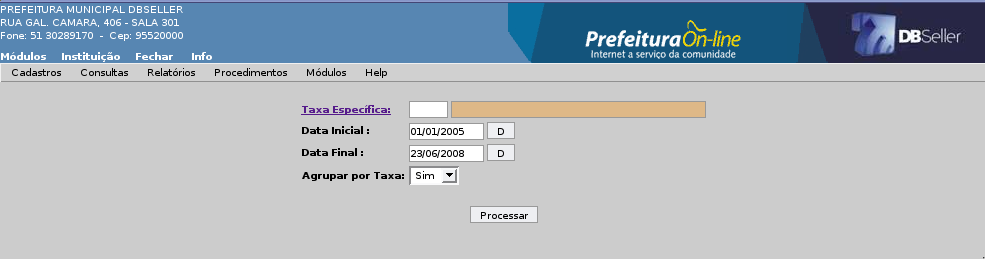
Figura
68
Na Figura 69 mostra um modelo de relatório das taxas específicas.

Figura
69
Esse relatório exibe os recibos avulso, por um período e podendo selecionar por uma receita específica.
Descrição dos campos e modelo do cadastro conforme Figura 70.
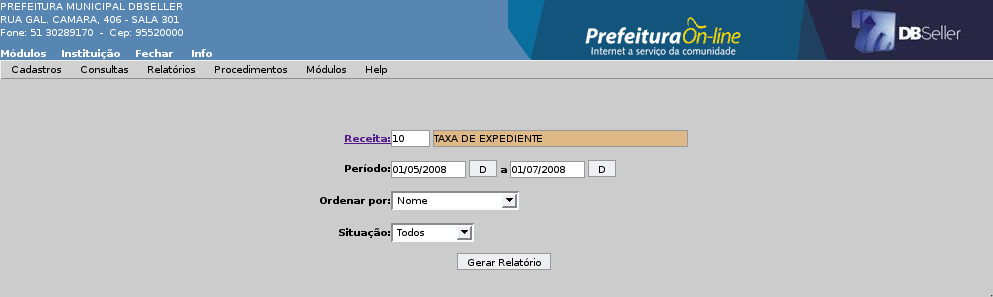
Figura
70
A Figura 71 mostra um modelo do relatório de recibo avulso.

Figura
71
Esse relatório permite ao usuário que faz a baixa bancária efetuar a conferencia dos valores que foram pagos com diferença em relação ao do calculado, permitindo buscar os dados pela data do arquivo ou do pagamento do débito.
Descrição dos campos e modelo do cadastro conforme Figura 72.

Figura
72
A Figura 73 mostra um modelo do relatório de valores pago por banco.

Figura
73
Esse relatório emite os valores por contribuinte conforme os débitos da consulta geral financeira.
Descrição dos campos e modelo do cadastro conforme Figura 74.
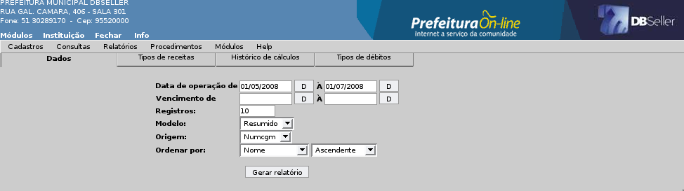
Figura
74
A Figura 75 mostra um modelo do relatório de Débitos.
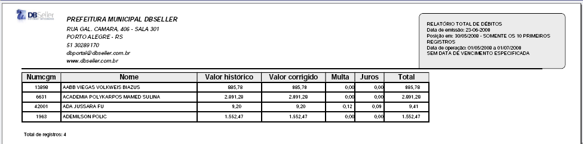
Figura
75
Esse relatório emite uma lista de contribuintes por receita, com os valores para cada contribuinte, mostrando o histórico de pagamento.
Descrição dos campos e modelo do cadastro conforme Figura 76.

Figura
76
A Figura 77 mostra um modelo do relatório das receitas por contribuinte.

Figura
77
Esse relatório emite uma lista dos parcelamentos cuja entrada do parcelamento não foi paga. No caso, estão em aberto os pagamentos do parcelamento.
Descrição dos campos e modelo do cadastro conforme Figura 78.

Figura
78
A Figura 79 mostra um modelo do relatório de parcelamento (Entrada em Aberto).

Figura
79
Esse relatório emite os débitos cancelados no sistema, conforme os tipos de débitos existentes. Este relatório é muito utilizado pelo setor tributário, para verificar informações referente renuncias de receita, afim de repassar ao setor contábil.
Descrição dos campos e modelo do cadastro conforme Figura 80.

Figura
80
A Figura 81 e 81a mostram o relatório dos débitos cancelados agrupado por Característica Peculiar.

Figura
81

Figura
81a
Nesse relatório são emitidos os descontos efetuados pelas regras de descontos dos parcelamento e na emissão dos recibos para pagamento. Este relatório também é utilizado para informações sobre renuncia de receita no sistema.
Descrição dos campos e modelo do cadastro conforme Figura 82.

Figura
82
A Figura 83 mostra um modelo de relatório de desconto por regra de desconto.

Figura
82
Nesse procedimento é efetuada a arrecadação dos débitos no sistema. Essa rotina utiliza o cadastro de autenticadoras, que são ligadas ao ip da máquina que está executando o processo de autenticação.
Descrição dos campos e modelo do cadastro conforme Figura 83.
Conta: Selecionar a conta que será feita a entrada da arrecadação.
Autenticar: Pode ser feito através de uma leitora de código de barras ou digitar o código de arrecadação do recibo/carnê nesse campo e após basta clicar no botão [calcular]. Para finalizar o processo, basta clicar no botão [autenticar]. O sistema exibe uma mensagem perguntando se o usuário quer autenticar novamente, para casos em que não tenha executado corretamente na primeira vez.
À Pagar: Ao passar o código de barras ou digitar o código de arrecadação ele busca o valor do recibo para este campo.
Recebido: Ao digitar o valor recebido, o sistema calcula automaticamente o troco a ser dado para o contribuinte.

Figura
83
Nesse procedimento são cadastrados os códigos de arrecadação (e o seu tipo de débito) que não se quer agrupar na emissão do recibo no sistema, caso a instituição utilize o tipo de débito como campo “Agrupar” configurado como parcial.
Descrição dos campos e modelo do cadastro conforme Figura 84.
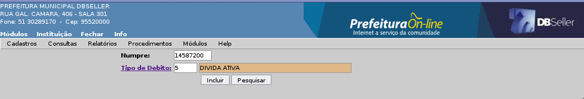
Figura
84
Esta rotina se destina a realizar manutenção nos vencimentos dos débitos gerados para uma determinada matrícula, inscrição ou CGM, onde o principal objetivo e alterar o vencimento do débito para que este não seja cobrado juro ou multa por motivos alheios ao fato do atraso propriamente dito por parte do contribuinte.
 Os
campos usuário, data e hora, não serão informado
pelo usuário, pois estas informações o sistema
capturará da seção, o numpre será aquele
que irá ser informado para ser feita a prorrogação.
O campo parcela, poderá ser escolhido conforme a situação
do numpre, por exemplo, um numpre cuja origem e de um parcelamento em
dez vezes, e a primeira irá ser prorrogada, aparecerá a
opção para prorrogar qualquer uma das que constarem
neste campo.
Os
campos usuário, data e hora, não serão informado
pelo usuário, pois estas informações o sistema
capturará da seção, o numpre será aquele
que irá ser informado para ser feita a prorrogação.
O campo parcela, poderá ser escolhido conforme a situação
do numpre, por exemplo, um numpre cuja origem e de um parcelamento em
dez vezes, e a primeira irá ser prorrogada, aparecerá a
opção para prorrogar qualquer uma das que constarem
neste campo.
O inicio se refere ao período de inicio que deverá acontecer a prorrogação, poderá vir de encontro ao final do débito, já a opção fim do processo, se refere a data de fim do procedimento, ou seja, até quando será prorrogado o débito. O campo observações e um campo livre, onde deverá ser utilizado para informar o que foi feito com relação aos procedimentos de prorrogação do referido débito.

Figura
85

Figura
86
É uma forma de cadastrar a máquina do usuário como uma excessão do sistema. Assim as máquinas cadastradas nesse procedimento vai emitir o modelo selecionado nesse cadastro, e não o padrão do sistema.
Descrição dos campos e modelo do cadastro conforme Figura 87.
Modelo Padrão: Selecionar o modelo de carnê utilizado para está máquina.
IP: Preencher o IP de rede da máquina.
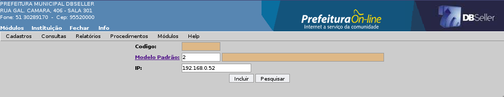
Figura
87
O objetivo da rotina é emitir recibos de um receita tributária ou não tributária. Caso emita um recibo avulso e não efetuar o pagamento, o registro não ficará em débito. Mas se houver pagamento, o sistema credita o registro em pagamento efetuados.
Quando for efetuar uma arrecadação de um valor negativo (normalmente para casos de deduções), devemos utilizar a rotina de planilha (Tesouraria > Procedimento > Planilha de Lançamento).
Ao lançar um recibo para o protocolo, o sistema vincula o valor ao CGM do titular do processo, ficando vinculado também ao processo.

Figura
88
Nesse procedimento é concedido um desconto para um débito. Este desconto é registrado/vinculado ao valor histórico do código de arrecadação.
Descrição dos campos e modelo do cadastro conforme Figura 89.
Parcela: Permite selecionar todas as parcelas de um débito ou somente uma.
Receita: Permite selecionar uma receita para os débitos.
Percentual: Escolher um percentual para conceder de desconto no débito escolhido. Caso escolha o percentual, não deve ser escolhido o campo valor.
Valor: Escolher o valor para conceder de desconto no débito escolhido. Caso escolha o valor, não deve ser escolhido o campo percentual.
Histórico: Este campo informa o histórico do desconto para a consulta do débito.
Observação: Permite descrever uma observação para o desconto do débito.

Figura
89
Nessa opção é possível cancelar um desconto concedido para um determinado débito, para isso, informe o numpre do débito e clique no botão [Enviar].
Na tela seguinte serão apresentados os descontos concedidos para o débito vinculado ao numpre, conforme demonstrado na figura 90. Selecione qual item de desconto deseja cancelar e clique no botão [Cancelar].

figura
90
Esse procedimento consiste em efetivar os cancelamentos de débitos que foram lançados/registrados para cancelar na Consulta Geral Financeira, ou seja, é nesse momento que o débito passará da situação de débito pendente para débito cancelado.
Ao acessar o menu, serão apresentados todos os grupos de cancelamentos que foram gerados e que ainda não foram processados. Selecione o registro desejado para processar conforme demonstrado na figura 91.
Na próxima tela, são apresentados os débitos que estão vinculados ao grupo de cancelamento selecionado e os dados de lançamento:
Dados do Cancelamento
Nesse quadro são apresentadas informações sobre o lançamento como: usuário, data e hora e a mensagem de digitada pelo usuário.
Dados do Processamento
Nesse quadro o usuário que está processando o cancelamento pode digitar uma mensagem no campo observações e visualizar todos os débitos que serão processados. Pode também alterar o conteúdo do campo Tipo de Cancelamento, (Normalou Renuncia). Após digitar a mensagem, clique no botão [Processar] que fica no final da tela, conforme demonstrado na figura 92.

figura
91

figura
92
Nessa rotina é possível excluir da lista dos cancelamentos a serem processados um débito específico de um grupo de cancelamento lançado/registrado ou então todo o grupo. Para isso, selecione o grupo que ainda não foi processado na lista conforme figura 93.
Na tela seguinte serão apresentados os dados do lançamento do cancelamento e os débitos que estão nesse grupo. Selecione quais os débitos deseja excluir desse grupo ou caso desejar todos, clique no link “M” para marcar todos e clique no botão [Processar], conforme figura 94.
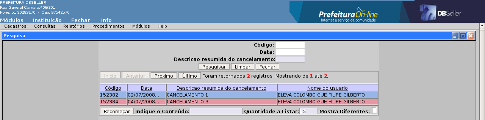
figura
93

figura
94
Nessa rotina é possível reverter um débito ou todo um grupo de débitos que foi lançado/registrado para cancelar e posteriormente processado. Dessa forma, a situação do débito passará de débito cancelado na Consulta Geral Financeira, para débito pendente.
Selecione o registro desejado na lista conforme demonstrado na figura 95.
Na tela seguinte, serão apresentado os dados do lançamento e do processamento do cancelamento como: usuário, data, hora e observações, além da lista com todos os débitos do grupo. Selecione quais registros deseja que retornem a situação de pendente novamente na Consulta Geral Financeira ou clique no link “M” para selecionar todos. Após, clique no botão [Processar], conforme demonstrado na figura 96.

figura
95

figura
96
Nesse menu são configurados os parâmetros do módulo arrecadação.
Descrição dos campos e modelo do cadastro conforme Figura 97.
Exercício: Este parâmetro é valido por exercício e instituição no módulo arrecadação. Campo preenchido automaticamente.
Receita Juro: É a receita padrão de juros, que é utilizada no cadastramento de receitas novas.
Receita Multa: É a receita padrão de multa, que é utilizada no cadastramento da receita.
Banco: É o banco padrão que o sistema busca no cadastramento dos bancos.
Agência: É a agência padrão que o sistema busca no cadastramento de agência.
Mensagem CGF: Mensagem que é exibida na Consulta Geral Financeira.
Mensagem Carnê: Mensagem exibida no carnê.
Mensagem no Pagamento Carnê: Mensagem exibida no carnê de pagamento.
Libera Variável: Se o usuário selecionar “SIM”, o sistema emite a certidão negativa para os débitos de ISS Variável sem valor, mesmo estanco vencidos.
Dias Justificado: É cadastrado a quantidade de dias padrão ao justificar um débito.
Recibo na Certidão de Débito: Ao escolher a opção “SIM”, permite emitir um recibo ao gerar uma certidão de débito no sistema, utilizando as taxas gravadas no campo abaixo “grupo de taxa”.
Grupo de Taxa: Este campo só é valido se escolher no campo acima a opção “SIM” para emitir o recibo na certidão.
Tipo de Codificação: O usuário seleciona o tipo de codificação usada na emissão da certidão de débito no sistema:
Não codifica: não emite/exibe código no documento da certidão.
Código seqüencial geral: Emite um seqüencial para todas certidões (Negativa, Positiva e Regular).
Código do processo: Emite o código de acordo com o processo de protocolo cadastrado.
Seqüencial conforme o tipo: Emite um seqüencial para cada tipo de certidão.

Figura
97
|
DBSeller Serviços de Informática Ltda. – www.dbseller.com.br Rua General Câmara, 406/301 – Porto Alegre/RS – Fone: (51) 3076-5101 |
|